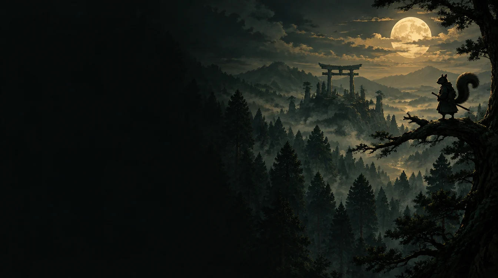

Dream game / Concept exploration
Samurai Squirrel
A long-term game idea. Exploring its world, tone, and character before defining the full game.
Higgsfield concept art · Not gameplayRiver Hine / Game & web developer
I build games, connect systems,
and turn curiosity into something you can use.
Real projects. Active experiments.
A closer look at how I build.
 OPEN CASE STUDY ↗
OPEN CASE STUDY ↗A dark-fantasy roguelike deckbuilder with three playable heroes, branching routes, and interlocking card systems.
↗ VANGUARD / MOTION STUDY · NOT GAMEPLAY
VANGUARD / MOTION STUDY · NOT GAMEPLAYIdeas with room to grow.
Clearly marked, honestly early.

A long-term game idea. Exploring its world, tone, and character before defining the full game.
Higgsfield concept art · Not gameplayExploring a focused tool for the development process. The first step: choose a real problem worth solving.
Scope in exploration · No release dateThe next project starts with a question. This space stays open until an experiment earns it.
Explore the experiments ↗Generate a dungeon. Shuffle a hand. Explore the prototypes behind the bigger ideas.
Enter the Lab ↗I’m River, a student developer in Meridian, Idaho. I started with browser projects and moved into Unity and C# as my ideas grew.
I learn by making things, testing them, and trying again. AI helps with brainstorming and implementation; I direct the projects and make the final decisions.
Meet the person behind the projects ↗Internships. Collaborations. Interesting ideas.